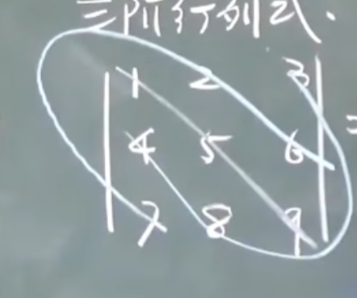
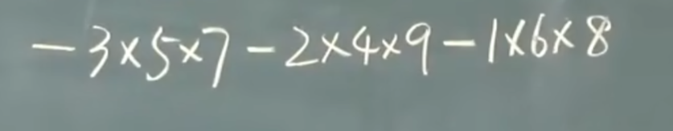
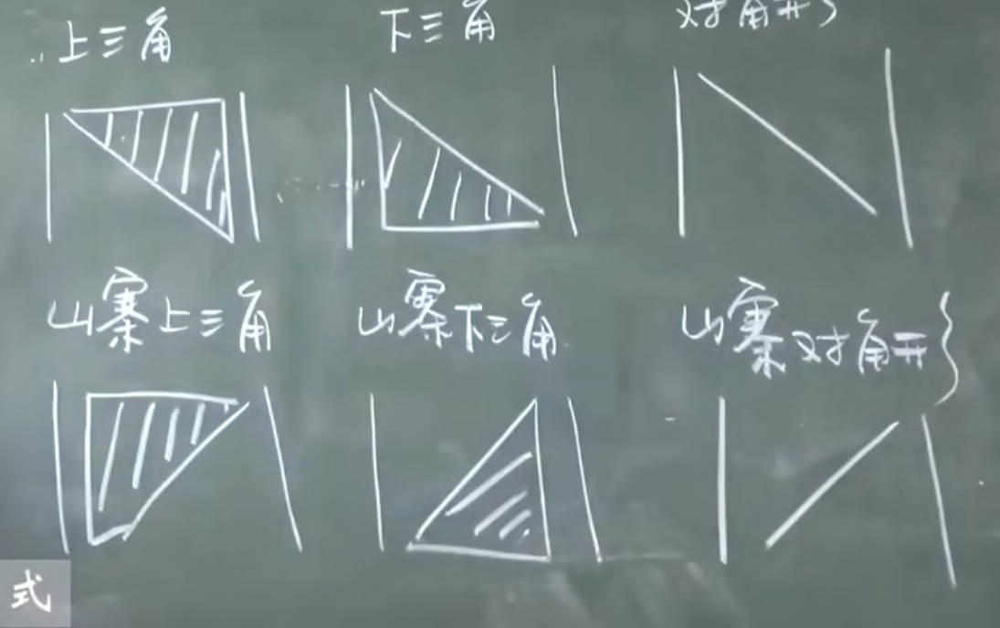

线性代数基本教程 （1）
线性代数
入门
这个科目，我们将要讨论矩阵，矩阵有很多不同于基础代数的东西。
比如说，将矩阵不满足交换率，不可以作分母$\frac{1}{A}$
行列式
现在我们注意，这门学科起步于线性方程组
我们只解不化简：

我们引入这样的符号：
我们使之这个表示为$ad-bc$，这就是行列式
其$a_{ij}$中i , j表示行标，列标。那么：
三阶行列式
这是一个三阶行列式，他的求法是这样的：



不过，还有别的方法，不推荐这种方法计算
排列与逆序
排列：由1，2，3，4，…n组成的一个有序数组叫N级排列
123,132,213,231,312,321
这是一个三级排列
而3145不是一个五级排列。因为少了2.
N级排列有n!种
逆序：
大数排在了小数前面，构成了一个逆序：
4213：4排在了2的前面，故这是一个逆序
逆序数：逆序的总数
4213：4后面3个，2：一个，之后没有了，故是4个
可以记作：N(4213)=4
偶排列和奇排列：排列数奇偶
若N(1234…n)=0则称之为标准排列（自然排列）
对于完全逆序的排列：N(n(n-1)(n-2)…321)=$\frac{n(n-1)}{2}$
对换：交换两个数
我们对一个排序进行对换：可以发现奇偶性改变一次（后面行列式会用到）
N排列中，奇偶排列个数相等，各占一半
基本求解
我们是这样求解N阶的行列式：
这是按行展开的。
太抽象了，我们后面使用别的办法求解：是这样的—-我们的j_n求所有可能排列
我们有这样的一些特殊的矩阵值得注意：
1）下三角行列式
这是有趣的：因为我们这个行列式的值就是$a_{11}a_{22}a_{33}…a_{nn}$
2)上三角行列式
这是有趣的：因为我们这个行列式的值就是$a_{11}a_{22}a_{33}…a_{nn}$，跟上面的一样
3）对角行列式
这个行列式的值还是上面我提到的那个
但是下面的有些不同。
反下三角行列式
还有这种：
总结看来就是这样的：

性质
转置
定义
现在来看一个行列式：
现在，我们把行写出列，列写成行，那就是：
那显然：
性质
1）$D^T=D$
2)两行交换，行列式只变号
3）两行（列）相等，D=0\
4)某一行都有公因子k,那就提N次：
5)两行对应成比例：那还是行列式的值是0！
6）对于这样的行列式：
其余行都不动
7）某一行乘上一个数加到另一行上，行列式的值还是不变！
我们可以使用这些性质来求解行列式的值：
1）先处理第一行，在处理第二行。。。依次处理即可！不要随意处理！
或者：
2）先处理第一列，在处理第二列。。。依次处理即可！不要随意处理！